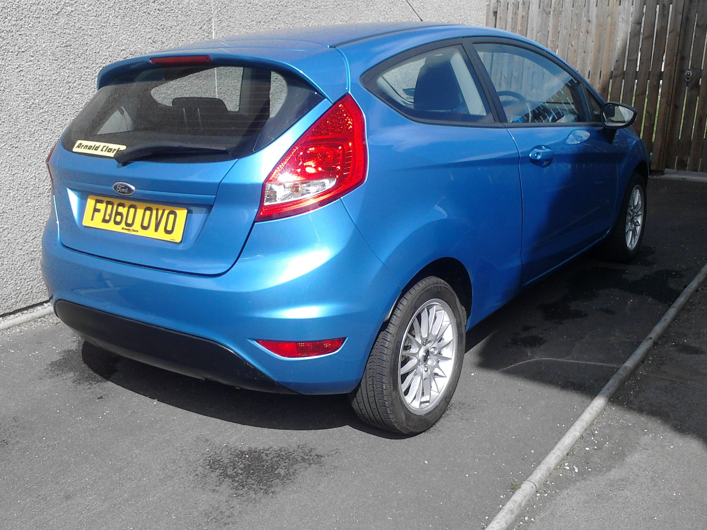

Interests and hobbies
In my spare time i play a lot of games on my computer. The computer is custom built by myself just to run games. It can do many other things that a normal computer can do, like do coursework but it has far more power than your standard computer you buy at a shop. Most of the games i play are online and are played against real people over the internet.
Another one of my interests are cars. Current i have a ford fiesta 1.25 edge to get me to University and back. I Enjoy repairing and customizing it to make it look unique compared to other ford fiestas. Currently i have put alloy wheels on it, Sprayed the inside blue to match the outside and added a custom air filter to increase performance and airflow. Here is a picture of my fiesta.
